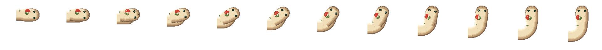
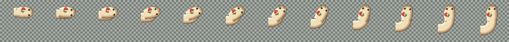
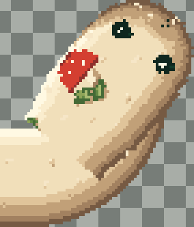
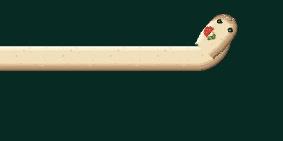

RIGHT → UP, один канонический 12-кадровый front module. Материал и лицо взяты из V5.6. Поворот подготовлен офлайн в native pixel frames; runtime-вращения нет. В gameplay ничего не подключено.
Cell 68 px · BODY 36 px · исходная поперечная ширина головы 42 px · canvas каждого кадра 160×160. В полосах центр головы выровнен для сравнения поз, а шея учитывает текущую canonical alpha. Обычное перемещение головы здесь не демонстрируется.




Изображения не shrink-to-fit: длинные полосы прокручиваются. Это статический sprite gate, не доказательство качества в движении. STOP для human approval до интеграции.